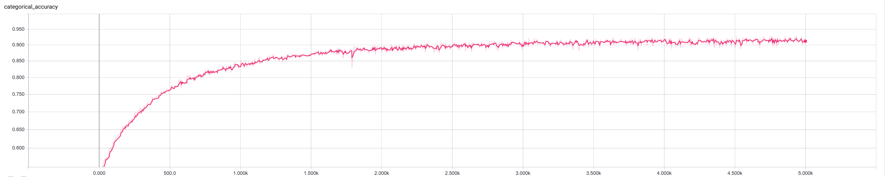
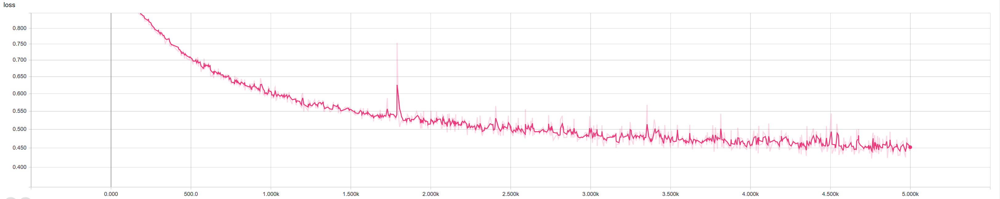
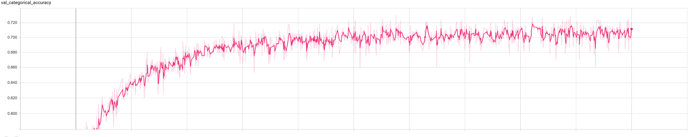
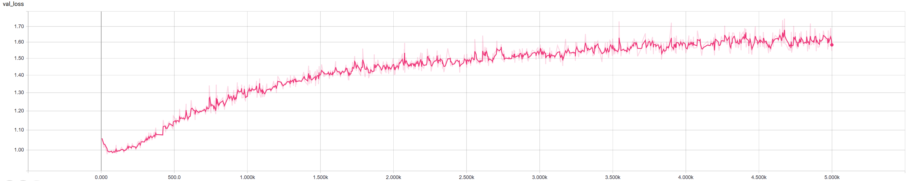

Analyzing Data using Machine Learning!
We tested a couple of different types of machine learning to try and predict which email a user belonged to based solely on its content. The body was converted into a set of 12 different reading statistics for comparison.
Flesch-Kincaid Grade Level
Gunning Fog Index
Flesch-Kincaid Reading Ease
SMOG Formula
Number of Sentences
SMOG Index
Number of Characters
Automated Readability Index (ARI)
Coleman-Liau Index
Number of Syllables
Number of Words
Number of Complex Words
From here we were able to start the machine learning. The first method used was K Nearest Neighbors (KNN). As you can see on the graph below, we were able to achieve nearly perfect results on the training data and approximately 71% on the test data.

We then moved on to deep learning. By tweaking the amount of layers and neurons per layer we were able to get similar results to the KNN method. However, in the data began to overfit as seen in the val_loss graph at the bottom.
   